汽水音乐有个活动：看一条约 30 秒的广告，换 1 天免费畅听时长。手动点一轮要 35～40 秒，攒 10 天差不多 6 分钟全得盯着。这份指南把「配置一次，之后它自己领」的全过程写清楚——重点不是点哪个按钮，而是每项权限为什么必须给。
① 这是第三方自动化 App（AScript）在读屏权限下模拟点击，平台的活动规则未必允许自动化参与，账号风险由你自己承担；只在自己登录的账号上、只做官方活动本身的流程。
② 全程不需要截图、录屏、图色识别权限——凡是要这些的弹框，一律点「取消 / 拒绝」。
③ 下文菜单名以 ColorOS 16（安卓 15 基底）为准，其他品牌机型叫法可能不同（如「辅助功能」「显示在其他应用上层」），按含义找同名开关即可。
一句话：脚本不"看画面"，它读系统的界面结构清单，然后替你点。
脚本在后台把汽水音乐拉起来，不是你在点。
这段时间它只是在读屏幕上的倒计时文字。
再关掉「第 N 天畅听」弹窗。
一轮 35～40 秒，10 天约 6 分钟，全程无人值守。
AScript 跑的是无障碍模式：安卓会把当前界面上的按钮、文字、开关整理成一份结构清单给读屏软件用，脚本读的就是这份清单——找到"免费听""领取"这类控件，算出坐标再模拟点击。所以它不需要截图，也不需要图色/录屏权限，比你想象的轻。
这张表是全篇的主线。配置时按「不给的后果」去理解，就不会觉得是在瞎开开关。
| 要开的东西 | 不给会怎样 |
|---|---|
| 无障碍服务 最关键 | 脚本的"手"。不开，一行代码都执行不了，后面全部免谈。 |
| 悬浮窗 | 看不到那个「10 天 / 开始领取」的控制面板和实时进度。 |
| 存储 / 文件访问 | 工程文件和运行日志写不进去，脚本直接报错。 |
| 通知 | 没有常驻通知，后台更容易被系统杀掉。新装默认是关的，必须手动开。 |
| 自启动 | 手机重启之后它不会自己起来，得你手动开一次。 |
| 关联启动 | 系统会拦住"AScript 去打开汽水音乐"这个跨应用动作，脚本卡在第一步。 |
| 多任务锁定 | 一键清理后台时被顺手清掉，领到一半就停。 |
| 耗电管理 → 完全允许后台 | 跑几分钟就被系统掐断，这是头号失败原因。系统分身里没有这个入口，分身用户可跳过。 |
| 后台弹出界面 | 脚本拉不起汽水音乐，会停在那等你手动点一下。 |
| 录屏 / 图色不需要 | AScript 自己会弹框要，点取消。给了反而多一项常驻权限。 |
每个步骤都给了实机截图。截图里出现的数字、开关位置对不上时，以你手机上"含义相同的开关"为准。
AScript 去官网 ascript.cn 下安卓版；汽水音乐在应用商店搜。装完打开汽水音乐，用手机号登录——登录这步只能你自己来，脚本不处理账号。
在 ColorOS 系统分身里点安装包，「继续安装」可能灰着点不动（应用未通过系统验证）。这时回主系统装好再进分身，或干脆在主系统里跑，都能用。
AScript 会先问你用哪种运行模式。选无障碍模式，不要选图色/录屏那套。
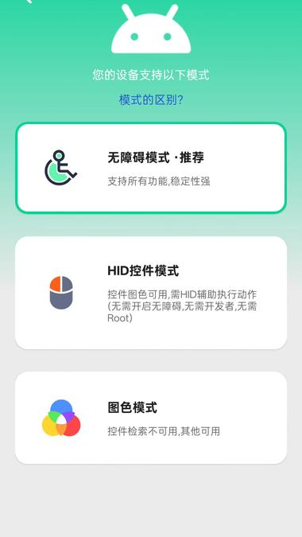
第一次运行会要文件权限，用来读写工程和日志。看到系统的文件访问弹框，点允许。
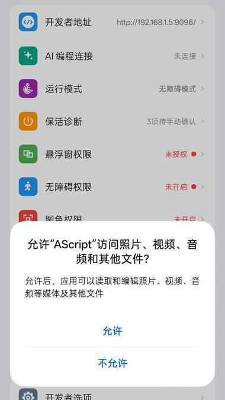
airscript/model/qishui，并写入运行日志。点拒绝的话，下一步就会直接报错。点「悬浮窗权限」那一行，系统会跳到权限页。有的机型还会先弹一个"是否允许显示在其他应用上层"的申请，点允许即可；如果没弹，就自己在列表里找 AScript。
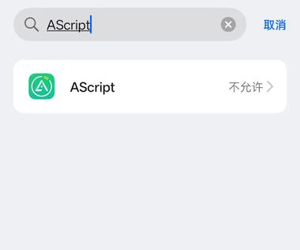
AScript 或 airscript，比一个个翻快。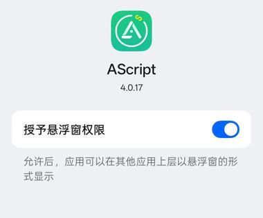
路径是 设置 → 辅助功能 → 无障碍 → 已下载的应用 → AScript，打开开关后会跳出一个红色警告页，上面有个「快速启用」的按钮。
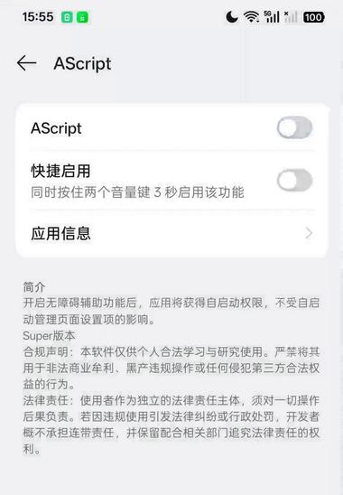
这是安卓给无障碍服务的标准文案，所有读屏软件都会触发。点允许。它给的是"读屏幕内容 + 代你点按"两项能力，正是脚本必需的那两项。不要在这里点拒绝，否则前面所有配置都白做。
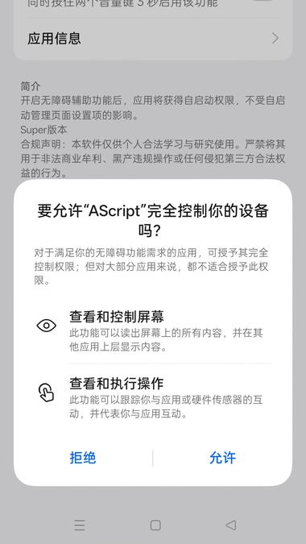
AScript 会顺手要"录制或投放"权限。本项目不需要截屏，一律点取消。给了会多一层常驻的录屏权限，还可能在通知栏留个红点。
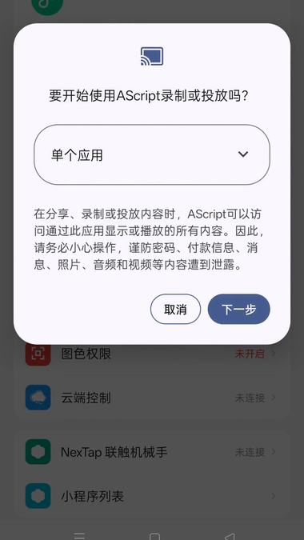
回到 AScript 主页，先看这四项。这是"我配对了没有"的第一道检查点。
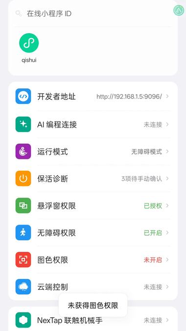
再点「保活诊断」跑一遍自检，理想结果是 4 项通过 / 0 项需调整 / 3 项待手动确认。
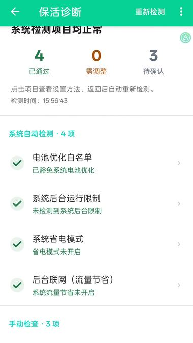
很多人卡在这以为没配好，反复折腾。它不是错误项，只是 AScript 没法替你判断的系统策略，点进去确认一眼、退回来它会自动重新检测。看到 4/0/3 就可以往下走了。
点「开始」时如果弹出「保持开启」之类的小窗，选保持开启/允许，别让它自己退。
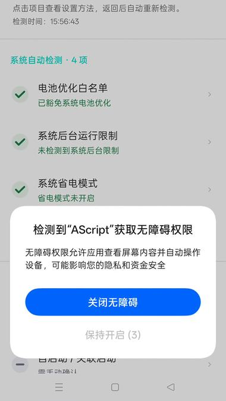
新装应用的通知权限默认关着，而这条常驻通知就是它"活着"的凭证——没有它，后台更容易被清。
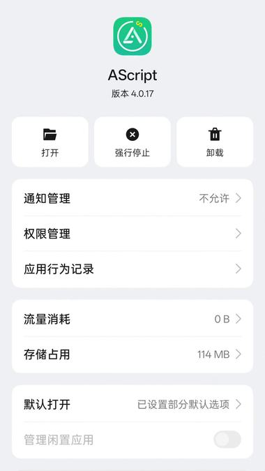
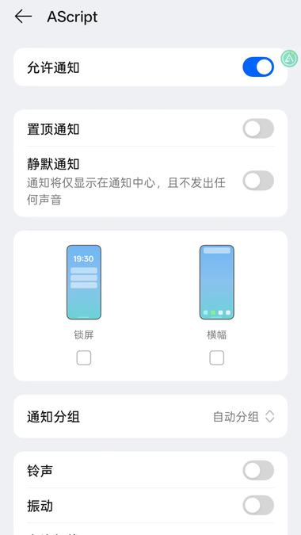
入口是 设置 → 应用 → 应用管理 → AScript。这两项都在应用详情里，不在"特殊权限"里，找不到的时候别乱翻。
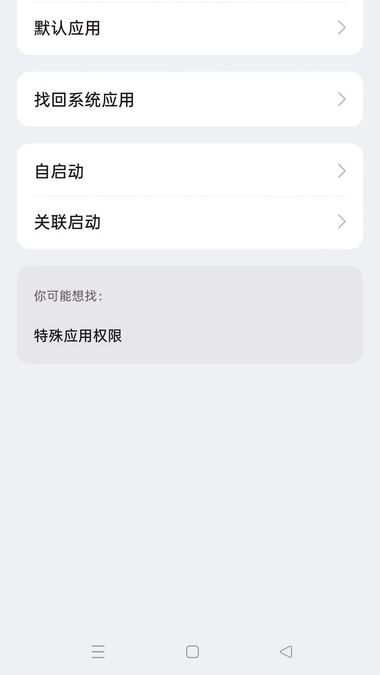
自启动：进去后页面分「允许自启动」「禁止自启动」两组。AScript 一开始在下面那组、开关是关的（允许 4 个 / 禁止 21 个）。把它的开关打开，它会移到上面一组，两个数字变成 5 / 20。
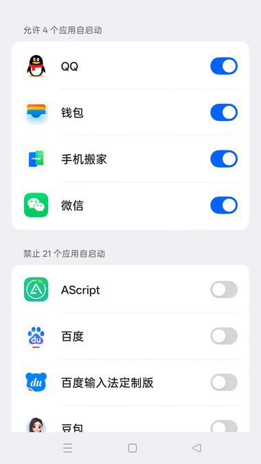
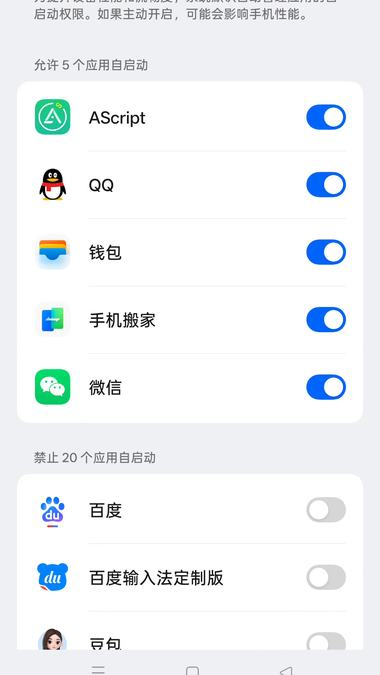
关联启动：同样找 AScript，允许它"被其他应用/自身拉起"。不改的话，系统会拦住"AScript 打开汽水音乐"这个动作，脚本永远卡在第一步。改完同样是数字变化：5→6、19→18。
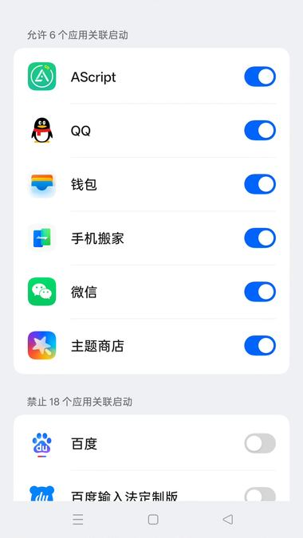
打开最近任务（多任务）界面，长按或点 AScript 卡片上的「更多」/三个点，选锁定。卡片右上角会出现一个小锁，之后一键清理不会把它清掉。
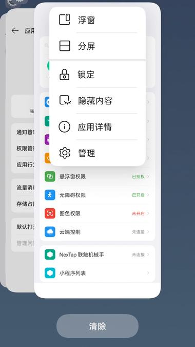
ColorOS 的分身空间里，AScript 应用详情页没有「耗电管理」这一项，所以分身用户没有这两步，直接看下一节。
耗电管理（必须）：设置 → 应用 → 应用管理 → AScript → 耗电管理 → 完全允许后台行为。不改的话，脚本跑几分钟就被系统掐掉，这是最常见的"明明配好了却不动"。
后台弹出界面（建议）：在"特殊应用权限"里找到"后台弹出界面"，允许 AScript。不给的话脚本拉不起汽水音乐，会停在那等你手动点。
配置只做一次。之后就是"选天数 → 开始领取 → 等它自己领完"。
在 AScript 的「小程序列表」里找到 qishui，点运行。屏幕上会浮出这个面板：选本次要连续领几天（3 / 5 / 10 / 15 / 20），然后点绿色按钮「开始领取」。
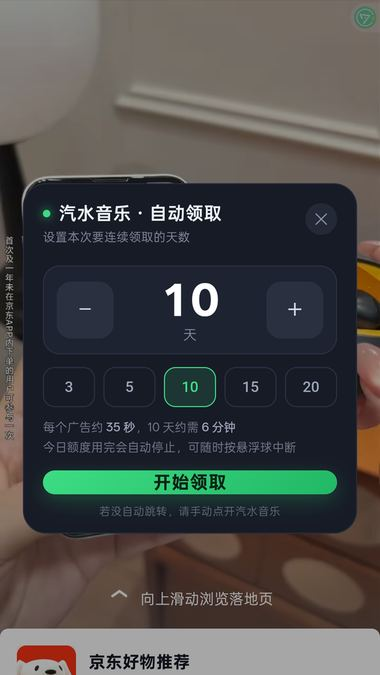
之后不用管它。脚本自己点开免费听、等 30 秒广告、领奖励、关面板，一轮接一轮。攒够天数后，面板会告诉你额度已到账。
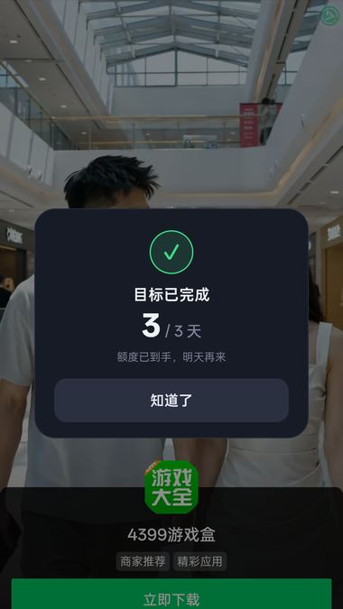
点悬浮球里的停止，或直接在面板上中断。今日额度用完它会自己停，不会无限刷。
看完这一段，基本不用再回头找原因。
敢。这是安卓给所有无障碍服务的统一文案，输入法、读屏、屏幕朗读都会触发同样的框。它授予的是"读取屏幕内容和代表你点按"两项能力，正好是脚本需要的；录屏、摄像头、文件全盘这些并不在这个框里，所以不用因为它吓人就点拒绝。
不是。本项目只用无障碍读控件树，完全不截图，所以录屏/图色权限给了也没用，反而多一层常驻权限和一个通知栏红点。AScript 会主动要，是它兼容另一种识图模式，你点取消即可，不影响运行。
不是，4 项通过 / 0 项需调整 / 3 项待确认就是配好的状态。前三项是 AScript 能自动读到的（电池优化、后台限制、省电模式、后台联网）；"待确认"那三项属于厂商策略，系统不让第三方 App 自行判断，得你自己点进去看一眼。点完返回，页面会自动重新检测。
安卓对新装应用默认关闭通知。而这条常驻通知是"进程还活着"的可视信号，也是系统判定它属于活跃应用的一个依据——没有通知，后台更容易被杀。所以必须手动打开。
按顺序排查三件事：① 耗电管理有没有改成"完全允许后台行为"（主系统必查，这是头号原因）；② 有没有被"一键清理"清掉，多任务锁开了没有；③ 有没有手滑把汽水音乐或 AScript 从后台划掉。分身用户没有耗电管理入口，那就更要注意别手动清后台。
两个开关之一没给：关联启动（系统拦截跨应用拉起）、后台弹出界面（特殊应用权限里）。补上再跑一次。如果只是偶发，面板上也写了兜底办法——手动点开汽水音乐一次，脚本会接管后面的流程。
点一下就能勾掉，刷新页面也还在。全部勾完再按「开始领取」。